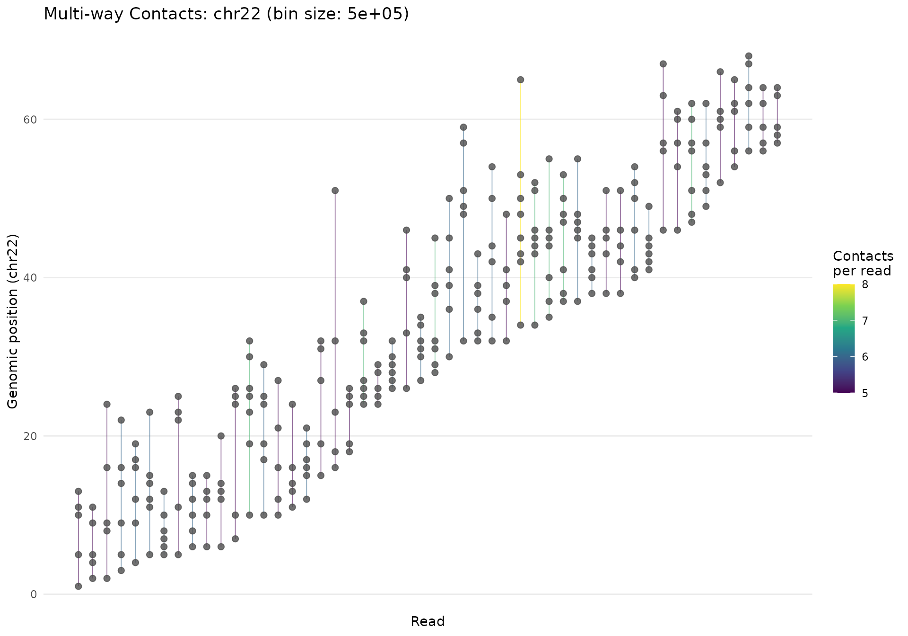
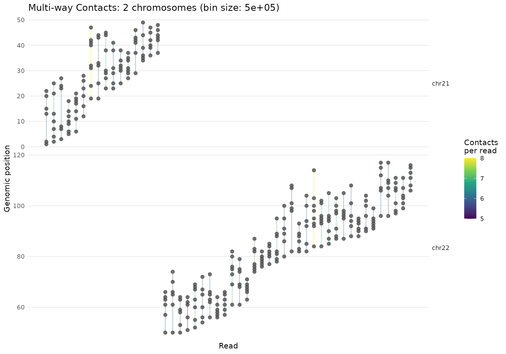
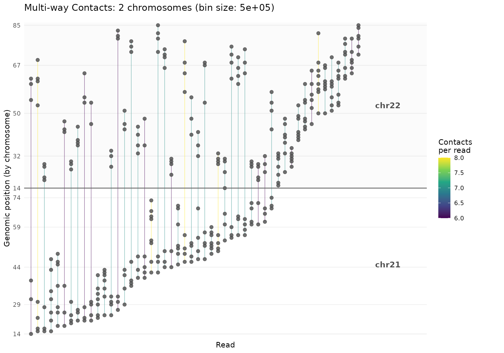
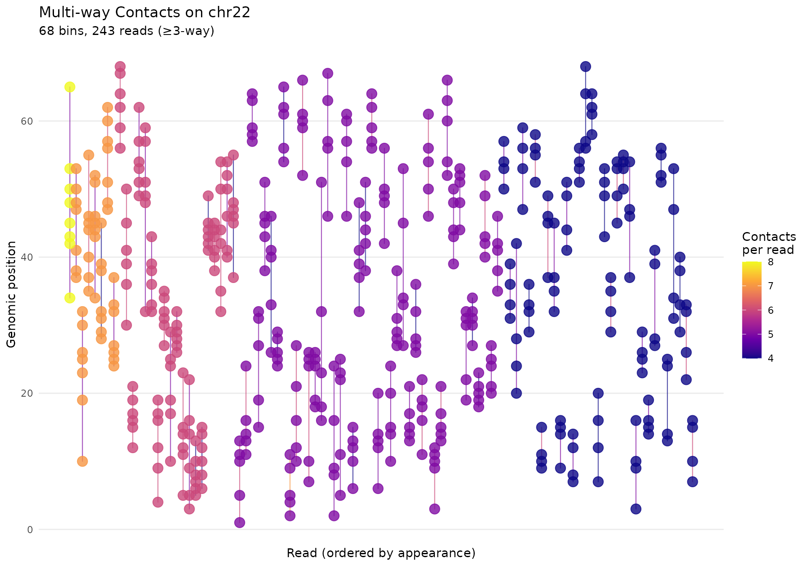
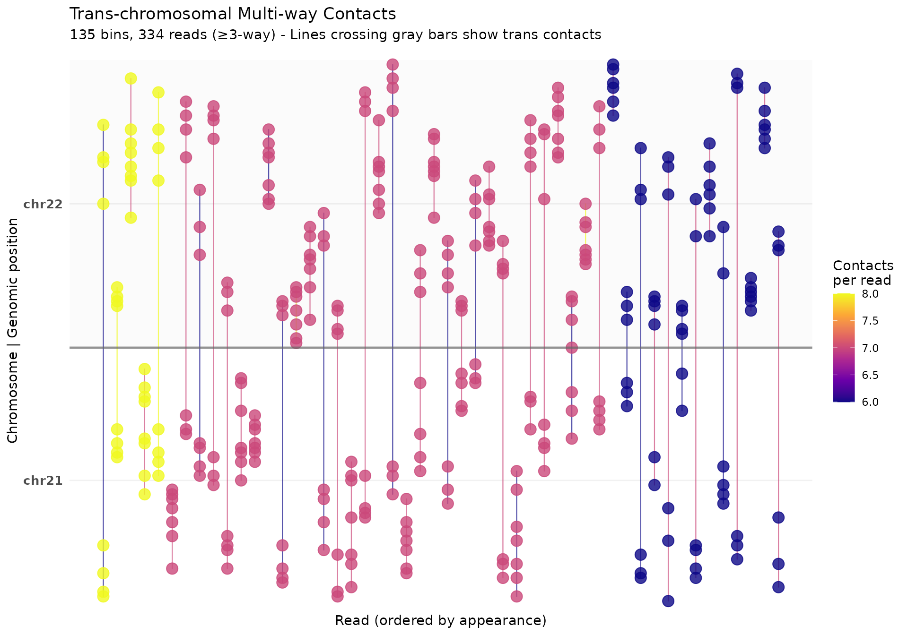
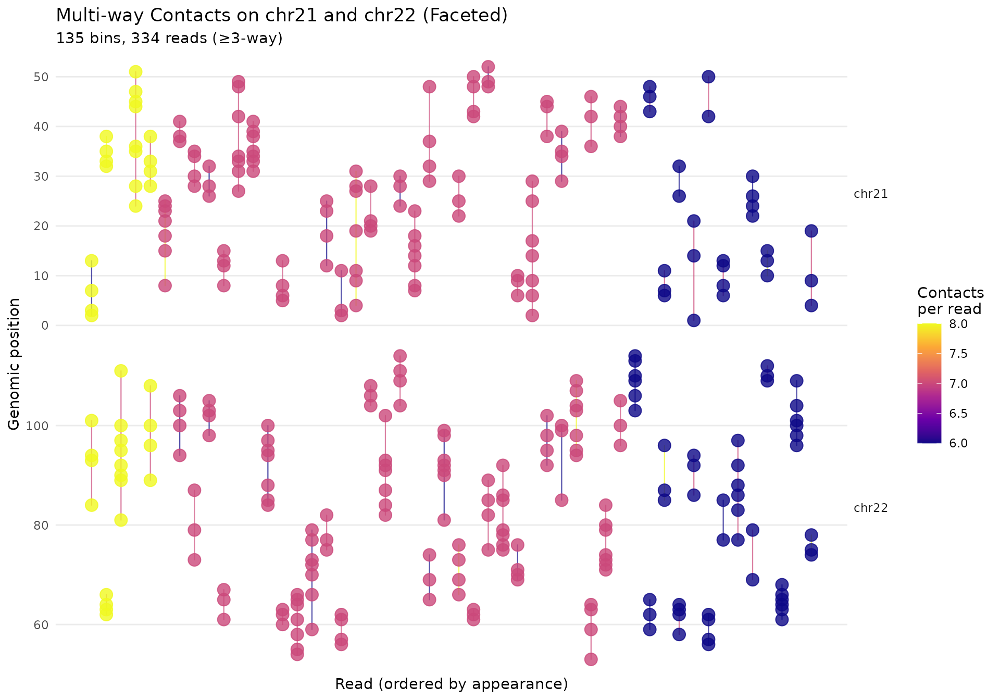
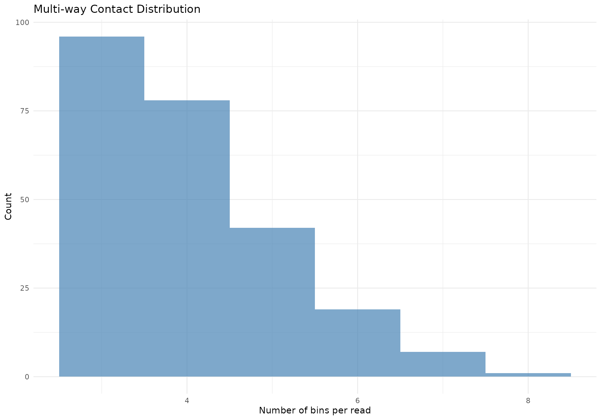
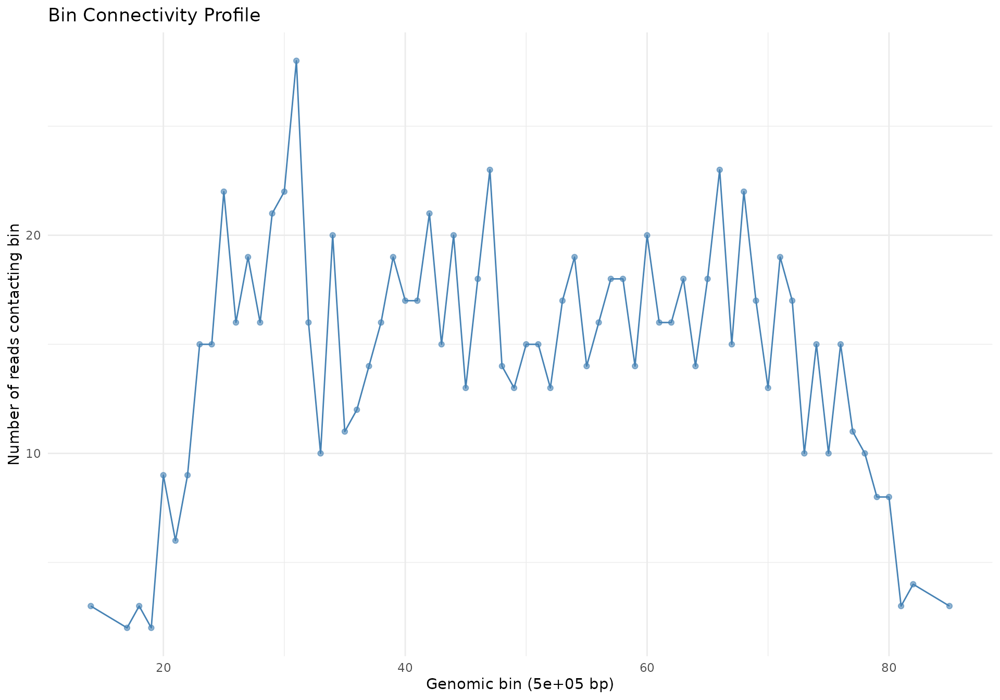

Multi-way Contact Analysis with Hypergraphs
gghic package
2025-12-02
Source:vignettes/hypergraph.Rmd
hypergraph.RmdOverview
Pore-C and HiPore-C technologies capture multi-way chromatin contacts where a single long DNA molecule can contact 3, 4, 5, or more genomic loci simultaneously. Traditional Hi-C analysis focuses on pairwise interactions, but multi-way contacts provide richer information about:
- Higher-order chromatin structure: TAD hubs, chromatin loops involving multiple enhancers
- Regulatory complexity: Multi-enhancer clusters coordinating gene expression
- Phase separation: Condensate formation with many participants
This vignette shows how to analyze and visualize multi-way contacts using hypergraph representations, where:
- Nodes = Genomic bins
- Hyperedges = Reads connecting multiple bins
Key Concepts
What is a Hypergraph?
A hypergraph is a generalization of a graph where edges (called hyperedges) can connect any number of vertices (nodes), not just two.
For chromatin contacts:
- Pairwise contact (Hi-C): edge connecting 2 bins
- 3-way contact: hyperedge connecting 3 bins
- N-way contact: hyperedge connecting N bins
Getting Started
Load required libraries:
load_pkg <- function(pkgs) {
for (pkg in pkgs) suppressMessages(require(pkg, character.only = TRUE))
}
load_pkg(c("dplyr", "ggplot2", "gghic"))Example Data Format
Your pairs file should be tab-separated with at least these columns:
read_name chrom1 pos1 chrom2 pos2
read_001 chr1 1000 chr1 5000
read_001 chr1 1000 chr1 9000
read_002 chr2 2000 chr2 8000
...Each row is a pairwise contact from a read. A read with 4 contacts generates 6 rows (all pairs).
Generate Example Data
For this vignette, we’ll create synthetic Pore-C data:
set.seed(42)
# Simulate multi-way contacts on multiple chromosomes
# Real Pore-C typically has 3-10 contacts per read
# Include both intra-chromosomal and trans-chromosomal contacts
n_reads <- 500
# Multiple chromosomes with different lengths
chroms <- data.frame(
chrom = c("chr21", "chr22"),
length = c(46e6, 50e6), # 46 Mb and 50 Mb
stringsAsFactors = FALSE
)
# Generate reads with varying numbers of contacts
read_data <- lapply(seq_len(n_reads), function(i) {
read_name <- sprintf("read_%05d", i)
# 20% chance of trans-chromosomal contacts
is_trans <- runif(1) < 0.2
if (is_trans) {
# Trans-chromosomal: contacts on both chromosomes
n_contacts_chr1 <- sample(2:4, 1)
n_contacts_chr2 <- sample(2:4, 1)
# Generate positions on chr21
center1 <- runif(1, 10e6, chroms$length[1] - 10e6)
spread1 <- runif(1, 1e6, 3e6)
pos_chr1 <- sort(pmax(1, pmin(
chroms$length[1],
rnorm(n_contacts_chr1, center1, spread1)
)))
# Generate positions on chr22
center2 <- runif(1, 10e6, chroms$length[2] - 10e6)
spread2 <- runif(1, 1e6, 3e6)
pos_chr2 <- sort(pmax(1, pmin(
chroms$length[2],
rnorm(n_contacts_chr2, center2, spread2)
)))
# Create all pairwise combinations (intra and inter)
all_positions <- list(
chr1 = data.frame(chrom = chroms$chrom[1], pos = as.integer(pos_chr1)),
chr2 = data.frame(chrom = chroms$chrom[2], pos = as.integer(pos_chr2))
)
# Combine all positions
all_contacts <- rbind(all_positions$chr1, all_positions$chr2)
n_total <- nrow(all_contacts)
if (n_total < 2) {
return(NULL)
}
pairs_list <- combn(n_total, 2, simplify = FALSE)
do.call(rbind, lapply(pairs_list, function(pair) {
data.frame(
read_name = read_name,
chrom1 = all_contacts$chrom[pair[1]],
pos1 = all_contacts$pos[pair[1]],
chrom2 = all_contacts$chrom[pair[2]],
pos2 = all_contacts$pos[pair[2]],
stringsAsFactors = FALSE
)
}))
} else {
# Intra-chromosomal: contacts on single chromosome
chr_idx <- sample(1:2, 1, prob = c(0.3, 0.7))
chr <- chroms$chrom[chr_idx]
chr_length <- chroms$length[chr_idx]
n_contacts <- sample(3:8, 1, prob = c(0.3, 0.25, 0.2, 0.15, 0.07, 0.03))
center <- runif(1, 10e6, chr_length - 10e6)
spread <- runif(1, 1e6, 5e6)
positions <- sort(pmax(1, pmin(
chr_length,
rnorm(n_contacts, center, spread)
)))
if (n_contacts < 2) {
return(NULL)
}
pairs <- combn(n_contacts, 2, simplify = FALSE)
do.call(rbind, lapply(pairs, function(pair) {
data.frame(
read_name = read_name,
chrom1 = chr,
pos1 = as.integer(positions[pair[1]]),
chrom2 = chr,
pos2 = as.integer(positions[pair[2]]),
stringsAsFactors = FALSE
)
}))
}
})
pairs_df <- do.call(rbind, read_data)
# Add some noise with random contacts
noise_pairs <- do.call(rbind, lapply(1:100, function(i) {
chr <- sample(chroms$chrom, 1)
chr_length <- chroms$length[chroms$chrom == chr]
data.frame(
read_name = sprintf("noise_%04d", i),
chrom1 = chr,
pos1 = sample(1:chr_length, 1),
chrom2 = chr,
pos2 = sample(1:chr_length, 1),
stringsAsFactors = FALSE
)
}))
pairs_df <- rbind(pairs_df, noise_pairs)
# Summary
cat(sprintf(
"Generated %d pairwise contacts from %d reads\n",
nrow(pairs_df), length(unique(pairs_df$read_name))
))
#> Generated 5319 pairwise contacts from 600 reads
# Count intra vs trans contacts
trans_contacts <- sum(pairs_df$chrom1 != pairs_df$chrom2)
cat(sprintf(
" Intra-chromosomal: %d (%.1f%%)\n",
nrow(pairs_df) - trans_contacts,
100 * (nrow(pairs_df) - trans_contacts) / nrow(pairs_df)
))
#> Intra-chromosomal: 4438 (83.4%)
cat(sprintf(
" Trans-chromosomal: %d (%.1f%%)\n",
trans_contacts,
100 * trans_contacts / nrow(pairs_df)
))
#> Trans-chromosomal: 881 (16.6%)
chr_counts <- table(pairs_df$chrom1)
for (i in seq_len(nrow(chroms))) {
cat(sprintf(
" %s: %d contacts (%.1f Mb)\n",
chroms$chrom[i], chr_counts[chroms$chrom[i]], chroms$length[i] / 1e6
))
}
#> chr21: 2540 contacts (46.0 Mb)
#> chr22: 2779 contacts (50.0 Mb)
head(pairs_df, 10)
#> read_name chrom1 pos1 chrom2 pos2
#> 1 read_00001 chr21 27651551 chr21 31762442
#> 2 read_00001 chr21 27651551 chr21 33514326
#> 3 read_00001 chr21 31762442 chr21 33514326
#> 4 read_00002 chr21 21721090 chr21 28230868
#> 5 read_00002 chr21 21721090 chr21 31627427
#> 6 read_00002 chr21 28230868 chr21 31627427
#> 7 read_00003 chr21 25627609 chr21 25874411
#> 8 read_00003 chr21 25627609 chr21 26736871
#> 9 read_00003 chr21 25874411 chr21 26736871
#> 10 read_00004 chr22 6959097 chr22 9658680Step 1: Build Hypergraph
The buildHypergraph() function processes pairs data into
a hypergraph structure:
# Single chromosome example
hg <- buildHypergraph(
pairs = pairs_df,
bin_size = 500000, # 500 Kb bins
chrom = "chr22", # Focus on chr22
quantile = 0.80, # Keep top 20% of pairwise contacts
min_multiway = 3 # Reads must contact ≥3 bins
)
#> Processing 2,779 contacts (chr22)
#> Filtering bin pairs with >= 3 contacts (80% quantile)
#> Retained 1,337 contacts from 341 reads
#> Final hypergraph: 68 bins, 243 reads (min 3-way contacts)
# Multiple chromosomes example (using both chr21 and chr22)
hg_multi <- buildHypergraph(
pairs = pairs_df,
bin_size = 500000, # 500 Kb bins
chrom = c("chr21", "chr22"), # Both chromosomes
quantile = 0.80,
min_multiway = 3,
inter_chrom = FALSE # Only intra-chromosomal contacts (default)
)
#> Processing 4,438 contacts (2 chromosomes)
#> Removed 97 reads with inter-chromosomal contacts (503 reads remaining)
#> Filtering bin pairs with >= 2 contacts (80% quantile)
#> Retained 2,112 contacts from 397 reads
#> Final hypergraph: 135 bins, 334 reads (min 3-way contacts)
# To include inter-chromosomal contacts between chr21 and chr22:
hg_multi_inter <- buildHypergraph(
pairs = pairs_df,
bin_size = 500000,
chrom = c("chr21", "chr22"),
quantile = 0.80,
min_multiway = 3,
inter_chrom = TRUE # Include inter-chromosomal contacts
)
#> Processing 5,319 contacts (2 chromosomes)
#> Filtering bin pairs with >= 2 contacts (80% quantile)
#> Retained 2,873 contacts from 496 reads
#> Final hypergraph: 138 bins, 437 reads (min 3-way contacts)Additional examples (not run with synthetic data):
⚠️ Note: The code examples in this section are provided for reference but are not executed in this vignette.
# Download example file with caching
cache_dir <- rappdirs::user_cache_dir("gghic")
dir.create(cache_dir, recursive = TRUE, showWarnings = FALSE)
pairs_file <- file.path(cache_dir, "test.txt.gz")
download_url <- "https://www.dropbox.com/scl/fi/yc4axg1mf2i9zylg3d0oe/test.txt.gz?rlkey=sdsdhsnixo01koo38d242y4c8&st=t4rn0js0&dl=1"
if (!file.exists(pairs_file)) {
message("Downloading test data to cache directory...")
download.file(
download_url, pairs_file,
method = "wget", extra = "-c", quiet = TRUE
)
message("Downloaded to: ", pairs_file)
} else {
message("Using cached file: ", pairs_file)
}
# From large file (uses C for speed)
# Genome-wide, intra-chromosomal only (default)
hg <- buildHypergraph(
pairs_file = pairs_file, # Supports .gz
bin_size = 100000,
chrom = NULL,
quantile = 0.85,
min_multiway = 3,
inter_chrom = FALSE # Only intra-chromosomal (default)
)
# Genome-wide with inter-chromosomal contacts
hg_all <- buildHypergraph(
pairs_file = pairs_file,
bin_size = 100000,
chrom = NULL,
quantile = 0.85,
min_multiway = 3,
inter_chrom = TRUE # Include inter-chromosomal contacts
)Parameters Explained
bin_size: Size of genomic bins -
Smaller bins = higher resolution but sparser data - Typical: 50-500 Kb
for Pore-C - Use find_optimal_resolution() from
resolution-depth vignette
quantile: Threshold for filtering
pairwise contacts - 0.85 = keep top 15% most frequent bin
pairs - Higher = more stringent, fewer contacts - Alternative: use
min_contacts for absolute threshold
min_multiway: Minimum contacts per read
- 3 = keep 3-way, 4-way, 5-way, … contacts - Higher = focus
on highly multi-way reads - Lower = include more reads but less
structure
Hypergraph Object
hg
#> Hypergraph object
#> ================
#> Chromosome(s): chr22
#> Bin size: 5e+05 bp
#> Bins: 68 (range: 14-85)
#> Reads: 243
#> Total edges: 981
#> Contacts per read: 3-8 (median: 4)The object contains: - incidence:
Sparse matrix (bins × reads) - bins:
Integer vector of bin IDs - reads:
Character vector of read names -
contacts_per_read: Integer vector
Step 2: Convert to Tidy Format
For visualization and analysis, convert to long format:
# All reads
df <- tidyHypergraph(hg)
# Subset to top 100 reads by contact count
df_top <- tidyHypergraph(hg, max_reads = 100)
df
#> # A tibble: 981 × 7
#> bin_idx read_idx bin_id chrom bin read_name n_contacts
#> <int> <int> <chr> <chr> <int> <chr> <dbl>
#> 1 1 1 chr22:14 chr22 14 read_00004 5
#> 2 1 183 chr22:14 chr22 14 read_00379 4
#> 3 1 212 chr22:14 chr22 14 read_00440 4
#> 4 2 55 chr22:17 chr22 17 read_00119 5
#> 5 2 116 chr22:17 chr22 17 read_00257 5
#> 6 3 61 chr22:18 chr22 18 read_00142 4
#> 7 3 165 chr22:18 chr22 18 read_00352 6
#> 8 3 176 chr22:18 chr22 18 read_00368 5
#> 9 4 55 chr22:19 chr22 19 read_00119 5
#> 10 4 87 chr22:19 chr22 19 read_00201 6
#> # ℹ 971 more rowsStep 3: Visualize Hypergraph
Basic Visualization
# Single chromosome
plotHypergraph(hg, max_reads = 50)
plotHypergraph(hg_multi, max_reads = 50, facet_chrom = TRUE)
plotHypergraph(hg_multi_inter, max_reads = 50, facet_chrom = FALSE)
This creates a plot where: - Y-axis: Genomic bins
(sorted by position) - For multi-chromosome plots with
facet_chrom = FALSE: Y-axis shows chromosome names in
bold with alternating gray/white background shading -
Chromosomes are separated by horizontal gray lines -
X-axis: Individual reads - Vertical
lines: Connect bins contacted by each read -
Points: Individual bin positions -
Color: Number of contacts per read -
Trans-chromosomal contacts: Lines spanning across the
horizontal separators show reads connecting multiple chromosomes -
Facets (when facet_chrom = TRUE): Separate
panel per chromosome
Custom Visualization
For more control, use geom_hypergraph():
ggplot(df_top, aes(x = read_idx, y = bin_idx, group = read_idx)) +
geom_hypergraph(
aes(color = n_contacts),
line_width = 0.4,
line_alpha = 0.7,
point_size = 1
) +
scale_color_viridis_c(option = "plasma", name = "Contacts\nper read") +
labs(
title = "Multi-way Contacts on chr22",
subtitle = sprintf(
"%d bins, %d reads (≥3-way)",
nrow(hg$incidence), ncol(hg$incidence)
),
x = "Read (ordered by appearance)",
y = "Genomic position"
) +
theme_minimal() +
theme(
panel.grid.minor = element_blank(),
panel.grid.major.x = element_blank(),
axis.text.x = element_blank(),
axis.ticks.x = element_blank()
)
# Multi-chromosome showing trans-chromosomal connections
df_multi <- tidyHypergraph(hg_multi_inter, max_reads = 50)
# Create composite y-axis for multi-chrom visualization
chrom_info <- df_multi |>
group_by(chrom) |>
summarise(
max_bin = max(bin_idx),
min_bin = min(bin_idx),
.groups = "drop"
) |>
arrange(chrom)
chrom_info$offset <- 0
chrom_info$y_start <- 0
chrom_info$y_end <- chrom_info$max_bin - chrom_info$min_bin + 1
if (nrow(chrom_info) > 1) {
for (i in 2:nrow(chrom_info)) {
chrom_info$offset[i] <- chrom_info$y_end[i - 1] +
max(1, 0.05 * chrom_info$y_end[i - 1])
chrom_info$y_start[i] <- chrom_info$offset[i]
chrom_info$y_end[i] <- chrom_info$y_start[i] +
(chrom_info$max_bin[i] - chrom_info$min_bin[i] + 1)
}
}
df_multi_composite <- df_multi |>
dplyr::left_join(
chrom_info |> dplyr::select(chrom, offset, min_bin),
by = "chrom"
) |>
dplyr::mutate(
y_composite = bin_idx - min_bin + offset
)
chrom_breaks <- chrom_info |>
dplyr::mutate(
mid_point = (y_start + y_end) / 2,
fill_color = if_else(dplyr::row_number() %% 2 == 0, "gray95", "white")
)
ggplot(df_multi_composite, aes(x = read_idx, y = y_composite, group = read_idx)) +
# Add alternating background shading for chromosomes
geom_rect(
data = chrom_breaks,
aes(
xmin = -Inf, xmax = Inf,
ymin = y_start, ymax = y_end,
fill = fill_color
),
alpha = 0.3,
inherit.aes = FALSE
) +
scale_fill_identity() +
geom_hypergraph(
aes(color = n_contacts),
line_width = 0.4,
line_alpha = 0.7,
point_size = 1
) +
geom_hline(
data = if (nrow(chrom_breaks) > 1) chrom_breaks[2:nrow(chrom_breaks), ] else NULL,
aes(yintercept = y_start),
linetype = "solid",
color = "gray40",
linewidth = 0.8,
alpha = 0.7
) +
scale_color_viridis_c(option = "plasma", name = "Contacts\nper read") +
scale_y_continuous(
breaks = chrom_breaks$mid_point,
labels = chrom_breaks$chrom,
expand = expansion(mult = c(0.02, 0.02))
) +
labs(
title = "Trans-chromosomal Multi-way Contacts",
subtitle = sprintf(
"%d bins, %d reads (≥3-way) - Lines crossing gray bars show trans contacts",
nrow(hg_multi$incidence), ncol(hg_multi$incidence)
),
x = "Read (ordered by appearance)",
y = "Chromosome | Genomic position"
) +
theme_minimal() +
theme(
panel.grid.minor = element_blank(),
panel.grid.major.x = element_blank(),
axis.text.x = element_blank(),
axis.ticks.x = element_blank(),
axis.text.y = element_text(face = "bold", size = 10)
)
# Multi-chromosome with faceting (separate panels)
ggplot(df_multi, aes(x = read_idx, y = bin_idx, group = read_idx)) +
geom_hypergraph(
aes(color = n_contacts),
line_width = 0.4,
line_alpha = 0.7,
point_size = 1
) +
scale_color_viridis_c(option = "plasma", name = "Contacts\nper read") +
facet_grid(chrom ~ ., scales = "free_y", space = "free_y") +
labs(
title = "Multi-way Contacts on chr21 and chr22 (Faceted)",
subtitle = sprintf(
"%d bins, %d reads (≥3-way)",
nrow(hg_multi$incidence), ncol(hg_multi$incidence)
),
x = "Read (ordered by appearance)",
y = "Genomic position"
) +
theme_minimal() +
theme(
panel.grid.minor = element_blank(),
panel.grid.major.x = element_blank(),
axis.text.x = element_blank(),
axis.ticks.x = element_blank(),
strip.text.y = element_text(angle = 0)
)
Interpretation
Vertical patterns: Reads spanning similar regions (local contacts)
Diagonal patterns: Sequential bins contacted together (chromatin fiber)
Dense clusters: Bins with many shared reads (potential hubs/compartments)
Long lines: Reads with many contacts (high-order structure)
Lines crossing chromosome boundaries: Trans-chromosomal contacts showing inter-chromosomal interactions - Look for lines that cross the horizontal gray separator bars - These represent reads that physically link multiple chromosomes
Background shading: Alternating gray/white bands distinguish different chromosomes - Y-axis labels show chromosome names in bold - Makes it easy to identify which genomic region belongs to which chromosome
Color intensity: Reads with more contacts (highly connected molecules)
Step 4: Analyze Hypergraph Properties
Contact Degree Distribution
# Distribution of contacts per read
ggplot(
data.frame(n_contacts = hg$contacts_per_read),
aes(x = n_contacts)
) +
geom_histogram(binwidth = 1, fill = "steelblue", alpha = 0.7) +
labs(
title = "Multi-way Contact Distribution",
x = "Number of bins per read",
y = "Count"
) +
theme_minimal()
Bin Popularity
# How many reads contact each bin?
bin_degrees <- Matrix::rowSums(hg$incidence)
df_bins <- data.frame(
bin_id = hg$bin_ids,
bin_num = hg$bin_info$bin_num,
degree = bin_degrees
)
ggplot(df_bins, aes(x = bin_num, y = degree)) +
geom_line(color = "steelblue") +
geom_point(color = "steelblue", alpha = 0.6) +
labs(
title = "Bin Connectivity Profile",
x = sprintf("Genomic bin (%s bp)", format(hg$bin_size, big.mark = ",")),
y = "Number of reads contacting bin"
) +
theme_minimal()
High-degree bins may represent: - Chromatin hubs: Architectural features (TAD boundaries, loop anchors) - Active compartments: Gene-dense regions - Technical artifacts: High mappability, repetitive elements
Pairwise Co-occurrence Matrix
Which bins are frequently contacted together?
# Compute bin-bin co-occurrence
cooccur <- Matrix::tcrossprod(hg$incidence)
# Convert to dense for visualization (if small enough)
if (nrow(cooccur) < 500) {
library(pheatmap)
pheatmap::pheatmap(
as.matrix(cooccur),
cluster_rows = TRUE,
cluster_cols = TRUE,
color = colorRampPalette(c("white", "steelblue", "darkblue"))(100),
main = "Bin Co-occurrence Matrix"
)
}Advanced Usage
Multi-Chromosome Analysis
Analyze contacts across multiple chromosomes to study:
- Inter-TAD interactions across chromosomes
- Chromosome territories and compartmentalization
- Trans-chromosomal hubs (e.g., nucleolar organizing regions)
# Analyze chromosome 21 and 22 together
hg_multi <- buildHypergraph(
pairs_file = pairs_file,
bin_size = 500000, # Larger bins for multi-chrom
chrom = c("chr21", "chr22"),
quantile = 0.90, # More stringent
min_multiway = 4,
inter_chrom = TRUE
)
# Visualize with chromosome facets
plotHypergraph(
hg_multi,
max_reads = 100, facet_chrom = FALSE, chrom = c("chr12", "chr22")
)
# Identify inter-chromosomal reads
df_multi <- tidyHypergraph(hg_multi)
trans_reads <- df_multi |>
group_by(read_name) |>
summarise(
n_chroms = length(unique(chrom)),
chroms = paste(unique(chrom), collapse = ",")
) |>
filter(n_chroms > 1)
cat(sprintf(
"Found %d reads with trans-chromosomal contacts (%.1f%%)\n",
nrow(trans_reads),
100 * nrow(trans_reads) / length(unique(df_multi$read_name))
))Genome-wide Hypergraph
For a complete picture, analyze all chromosomes:
# Build genome-wide hypergraph (intra-chromosomal only)
hg_genome <- buildHypergraph(
pairs_file = pairs_file,
bin_size = 1000000, # 1 Mb bins
chrom = NULL, # All chromosomes
quantile = 0.95, # Very stringent
min_multiway = 5
)
# Summary by chromosome
df_genome <- tidyHypergraph(hg_genome, max_reads = 500)
chr_summary <- df_genome |>
group_by(chrom) |>
summarise(
n_bins = length(unique(bin_idx)),
n_reads = length(unique(read_name)),
mean_contacts = mean(n_contacts)
) |>
arrange(desc(n_reads))
print(chr_summary)
# Visualize top chromosomes
plotHypergraph(hg_genome, max_reads = 200, facet_chrom = TRUE)TAD Identification from Multi-way Contacts
Multi-way contacts can reveal TAD boundaries:
bin_degrees <- Matrix::rowSums(hg_genome$incidence)
df_bins <- data.frame(
bin_id = hg_genome$bin_ids,
bin_num = hg_genome$bin_info$bin_num,
degree = bin_degrees
)
# Bins with high connectivity may mark TAD boundaries
boundary_candidates <- df_bins |>
filter(degree > quantile(degree, 0.9)) |>
pull(bin_num)
# Visualize on hypergraph
df_viz <- tidyHypergraph(hg, max_reads = 100) |>
mutate(is_boundary = bin %in% boundary_candidates)
ggplot(df_viz, aes(x = read_idx, y = bin_idx, group = read_idx)) +
geom_hypergraph(aes(color = n_contacts)) +
geom_hline(
data = data.frame(bin = boundary_candidates), aes(yintercept = bin),
color = "red", linetype = "dashed", alpha = 0.5, inherit.aes = FALSE
) +
labs(title = "Potential TAD Boundaries (red)") +
theme_minimal()Comparing Samples
# Build hypergraphs for multiple samples
samples <- c("control", "treatment")
hgs <- lapply(samples, function(sample) {
build_hypergraph(
pairs_file = paste0(sample, "_pairs.txt"),
bin_size = 100000,
chrom = "chr22",
quantile = 0.85,
min_multiway = 3
)
})
# Compare contact distributions
df_compare <- data.frame(
sample = rep(samples, sapply(hgs, function(h) length(h$contacts_per_read))),
n_contacts = unlist(lapply(hgs, function(h) h$contacts_per_read))
)
ggplot(df_compare, aes(x = n_contacts, fill = sample)) +
geom_histogram(binwidth = 1, alpha = 0.7, position = "identity") +
scale_fill_manual(values = c("steelblue", "coral")) +
labs(
title = "Multi-way Contact Distribution by Sample",
x = "Contacts per read",
y = "Count"
) +
theme_minimal()Export for Network Analysis
# Export incidence matrix for external tools (Cytoscape, igraph, etc.)
library(Matrix)
# Sparse matrix format
writeMM(hg$incidence, "hypergraph_incidence.mtx")
# Metadata
write.csv(
data.frame(bin_id = hg$bins, bin_pos = hg$bins * hg$bin_size),
"bins.csv",
row.names = FALSE
)
write.csv(
data.frame(
read_id = hg$reads,
n_contacts = hg$contacts_per_read
),
"reads.csv",
row.names = FALSE
)Biological Insights
What Multi-way Contacts Reveal
High-order contacts (≥5-way) suggest: - Phase-separated condensates (e.g., Polycomb bodies) - Transcription factories with multiple genes - Regulatory hubs with many enhancers
3-4 way contacts typically represent: - TAD internal structure - Enhancer-promoter-CTCF triplets - Local chromatin fiber folding
Bin hubs (high-degree nodes) may be: - Architectural proteins (CTCF, cohesin) - Super-enhancer clusters - Gene-dense compartments
Troubleshooting
No contacts after filtering - Lower
quantile threshold (e.g., 0.7) - Lower
min_multiway (e.g., 2) - Check data quality:
nrow(pairs)
Memory issues - Use pairs_file instead
of loading to memory - Increase quantile to filter more
aggressively - Process chromosomes separately - Use
max_reads in visualization
Visualization too dense - Increase
min_multiway - Use max_reads parameter -
Subset to genomic regions with dplyr::filter()
Slow performance - Ensure C functions are compiled:
check R CMD INSTALL - Use larger bin_size to
reduce bins - Filter data before building hypergraph
Session Info
sessionInfo()
#> R version 4.5.2 (2025-10-31)
#> Platform: x86_64-pc-linux-gnu
#> Running under: Ubuntu 24.04.3 LTS
#>
#> Matrix products: default
#> BLAS: /usr/lib/x86_64-linux-gnu/openblas-pthread/libblas.so.3
#> LAPACK: /usr/lib/x86_64-linux-gnu/openblas-pthread/libopenblasp-r0.3.26.so; LAPACK version 3.12.0
#>
#> locale:
#> [1] LC_CTYPE=C.UTF-8 LC_NUMERIC=C LC_TIME=C.UTF-8
#> [4] LC_COLLATE=C.UTF-8 LC_MONETARY=C.UTF-8 LC_MESSAGES=C.UTF-8
#> [7] LC_PAPER=C.UTF-8 LC_NAME=C LC_ADDRESS=C
#> [10] LC_TELEPHONE=C LC_MEASUREMENT=C.UTF-8 LC_IDENTIFICATION=C
#>
#> time zone: UTC
#> tzcode source: system (glibc)
#>
#> attached base packages:
#> [1] stats graphics grDevices utils datasets methods base
#>
#> other attached packages:
#> [1] gghic_0.2.0 ggplot2_4.0.1 dplyr_1.1.4
#>
#> loaded via a namespace (and not attached):
#> [1] RColorBrewer_1.1-3 rstudioapi_0.17.1
#> [3] jsonlite_2.0.0 magrittr_2.0.4
#> [5] GenomicFeatures_1.62.0 farver_2.1.2
#> [7] rmarkdown_2.30 fs_1.6.6
#> [9] BiocIO_1.20.0 ragg_1.5.0
#> [11] vctrs_0.6.5 memoise_2.0.1
#> [13] Rsamtools_2.26.0 RCurl_1.98-1.17
#> [15] base64enc_0.1-3 htmltools_0.5.8.1
#> [17] S4Arrays_1.10.0 progress_1.2.3
#> [19] curl_7.0.0 Rhdf5lib_1.32.0
#> [21] rhdf5_2.54.0 SparseArray_1.10.3
#> [23] Formula_1.2-5 sass_0.4.10
#> [25] bslib_0.9.0 htmlwidgets_1.6.4
#> [27] desc_1.4.3 Gviz_1.54.0
#> [29] httr2_1.2.1 cachem_1.1.0
#> [31] GenomicAlignments_1.46.0 lifecycle_1.0.4
#> [33] pkgconfig_2.0.3 Matrix_1.7-4
#> [35] R6_2.6.1 fastmap_1.2.0
#> [37] MatrixGenerics_1.22.0 digest_0.6.39
#> [39] colorspace_2.1-2 AnnotationDbi_1.72.0
#> [41] S4Vectors_0.48.0 textshaping_1.0.4
#> [43] Hmisc_5.2-4 GenomicRanges_1.62.0
#> [45] RSQLite_2.4.5 labeling_0.4.3
#> [47] filelock_1.0.3 httr_1.4.7
#> [49] abind_1.4-8 compiler_4.5.2
#> [51] bit64_4.6.0-1 withr_3.0.2
#> [53] htmlTable_2.4.3 S7_0.2.1
#> [55] backports_1.5.0 BiocParallel_1.44.0
#> [57] DBI_1.2.3 biomaRt_2.66.0
#> [59] rappdirs_0.3.3 DelayedArray_0.36.0
#> [61] rjson_0.2.23 tools_4.5.2
#> [63] foreign_0.8-90 nnet_7.3-20
#> [65] glue_1.8.0 restfulr_0.0.16
#> [67] InteractionSet_1.38.0 rhdf5filters_1.22.0
#> [69] grid_4.5.2 checkmate_2.3.3
#> [71] cluster_2.1.8.1 generics_0.1.4
#> [73] gtable_0.3.6 BSgenome_1.78.0
#> [75] tidyr_1.3.1 ensembldb_2.34.0
#> [77] data.table_1.17.8 hms_1.1.4
#> [79] utf8_1.2.6 XVector_0.50.0
#> [81] BiocGenerics_0.56.0 pillar_1.11.1
#> [83] stringr_1.6.0 BiocFileCache_3.0.0
#> [85] lattice_0.22-7 rtracklayer_1.70.0
#> [87] bit_4.6.0 deldir_2.0-4
#> [89] biovizBase_1.58.0 tidyselect_1.2.1
#> [91] Biostrings_2.78.0 knitr_1.50
#> [93] gridExtra_2.3 IRanges_2.44.0
#> [95] Seqinfo_1.0.0 ProtGenerics_1.42.0
#> [97] SummarizedExperiment_1.40.0 stats4_4.5.2
#> [99] xfun_0.54 Biobase_2.70.0
#> [101] matrixStats_1.5.0 stringi_1.8.7
#> [103] UCSC.utils_1.6.0 lazyeval_0.2.2
#> [105] yaml_2.3.11 evaluate_1.0.5
#> [107] codetools_0.2-20 cigarillo_1.0.0
#> [109] interp_1.1-6 tibble_3.3.0
#> [111] cli_3.6.5 rpart_4.1.24
#> [113] systemfonts_1.3.1 jquerylib_0.1.4
#> [115] dichromat_2.0-0.1 Rcpp_1.1.0
#> [117] GenomeInfoDb_1.46.1 dbplyr_2.5.1
#> [119] png_0.1-8 XML_3.99-0.20
#> [121] parallel_4.5.2 pkgdown_2.2.0
#> [123] blob_1.2.4 prettyunits_1.2.0
#> [125] latticeExtra_0.6-31 jpeg_0.1-11
#> [127] AnnotationFilter_1.34.0 bitops_1.0-9
#> [129] txdbmaker_1.6.0 viridisLite_0.4.2
#> [131] VariantAnnotation_1.56.0 scales_1.4.0
#> [133] purrr_1.2.0 crayon_1.5.3
#> [135] rlang_1.1.6 KEGGREST_1.50.0